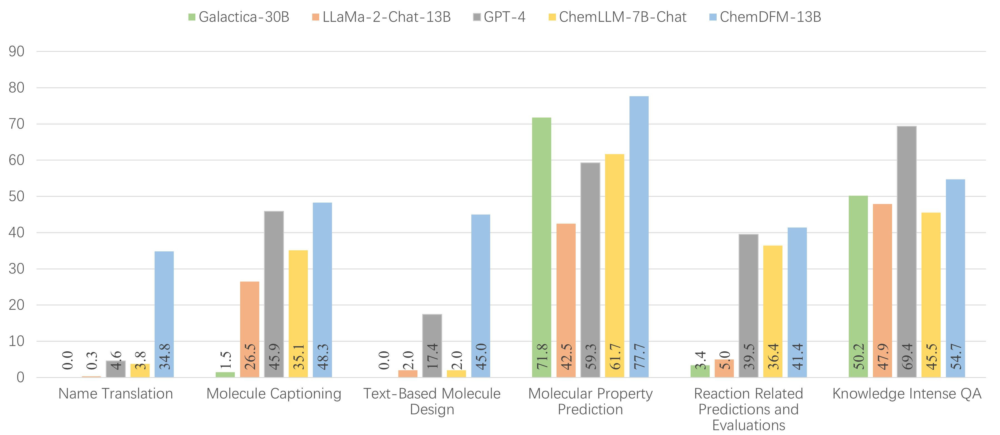
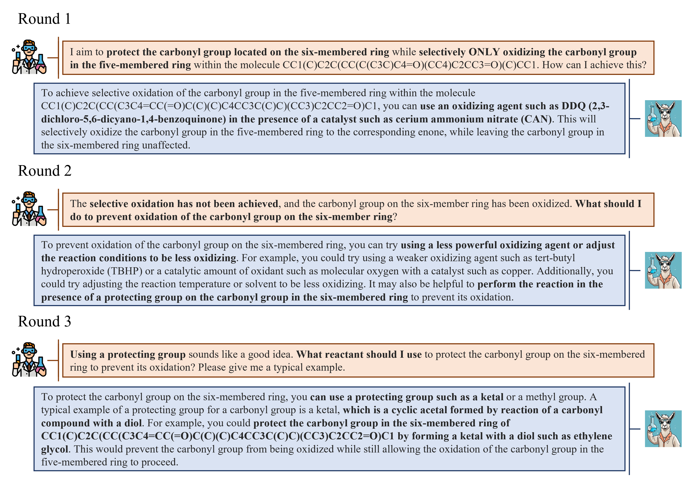

Objective Evaluation

►ChemDFM-13B greatly outperforms the representative open-sourced LLMs on typical chemical tasks.
►ChemDFM-13B achieves comparable or even better performances than GPT-4 on a great portion of chemical tasks, despite the significant size difference.
Human Evaluation: Question Answering

We mark the correct and relevant information in the replies in green, the correct but irrelevant information in yellow, and the wrong information in red. In addition, the key points of the answer are marked in bold if they appear in the reply.
The results show that while open-sourced LLMs perform well when asked about existing knowledge (Q1), only ChemDFM can provide correct and comprehensive answers when questions involve new molecules and reactions (Q2 [Yin et al., 2023] & Q3 [Dargo et al., 2023])
Human Evaluation: Dialogue

The above conversation is also inspired by Yin et al.[2023]. In the dialogue, ChemDFM shows promising capabilities regarding error correction (Round 2) and detailing (Round 3) when handling real-world research scenarios.